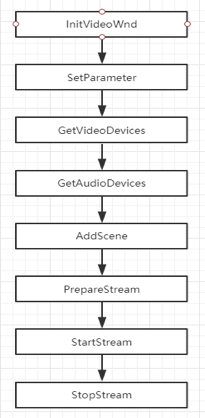

直播推流
本节介绍易视云Windows pc端推流基本流程和示例代码
推流基本流程

示例代码
以下使用代码示例描述一个简单的推流过程。
创建EVLive实例
初始化之前需要创建EVLive实例，创建实例时需要传入回调作为入口参数。回调接 口由CEVLiveCallBack声明，用户从CEVLiveCallBack派生继承接口声明，自己 定义实现具体业务逻辑
//自定义回调处理逻辑
class CEVDemoCallBack : public CEVLiveCallBack
{...};
CEVDemoCallBack* m_pCallBack = new CEVDemoCallBack();
// 创建Instance;
CEVLiveFactory::CreateInstance(m_pCallBack);
//通过宏AfxGetEVLive获取实例。
#define AfxGetEVLive CEVLiveFactory::GetInstance
初始化SDK
AfxGetEVLive()->InitSDK(appid, accessKey, secretKey, username);
推流
//此处视频创建显示比例最好控制为16：9，可以初始化程序窗口的时候调用
AfxGetEVLive()->InitVideoWnd(m_hWnd, pWndVideo->GetSafeHwnd(), true);
/*EVStreamerParameter 参数的一些默认值
int frameRate; // 编码帧率fps，默认15
int maxVideoBitrate; // 视频初始化码率，默认500kbps
int videoResolutionWidth; // 视频编码分辨率，默认为1280。可定义为枚举或常量(0-360x640, 1-540x960, 2-720x1280)
int videoResolutionHeight; // 视频编码分辨率，默认为720。可定义为枚举或常量(0-360x640, 1-540x960, 2-720x1280)
int iFrameInterval; // i帧间隔
*/
EVStreamerParameter para;
AfxGetEVLive()->SetParameter(para);
添加场景：可以添加视频、文字、图像、截屏等。
以视频为例：
// 设备列表;
DevicesInfo* m_pArrVedioDev;
DevicesInfo* m_pArrAudioDev;
int m_iVedioDevCount;
int m_iAudioDevCount;
//获取视频设备信息
AfxGetEVLive()->GetVideoDevices(m_pArrVedioDev, m_iVedioDevCount);
//获取音频设备信息
AfxGetEVLive()->GetAudioDevices(m_pArrAudioDev, m_iAudioDevCount);
CameraInfo cameraInfo;
//设置视频信息
strcpy_s(cameraInfo.strVideoName, m_pArrVedioDev[iVideoSel].strDevName);
strcpy_s(cameraInfo.strVideoID, m_pArrVedioDev[iVideoSel].strDevID);
//设置音频信息
strcpy_s(cameraInfo.strAudioName, m_pArrAudioDev[iAudioSel].strDevName);
strcpy_s(cameraInfo.strAudioID, m_pArrAudioDev[iAudioSel].strDevID);
cameraInfo.iWidth = width; // 预设置的视频宽度比例
cameraInfo.iHeight = height; // 预设置的视频高度比例 比如800 x 600
cameraInfo.iFlipType = FLIPTYPE_NONE;//设置翻转类型，如正常无翻转
cameraInfo.iFps = fps;//设置帧率
strcpy_s(cameraInfo.strOutForm, “I420”);//设置输出格式，如I420
AfxGetEVLive()->AddScene(&cameraInfo)//添加摄像头场景
//准备流，传入vid和key
AfxGetEVLive()->PrepareStream(vid, key);
//开始推流
AfxGetEVLive()->StartStream()
//停止推流
AfxGetEVLive()->StopStream()